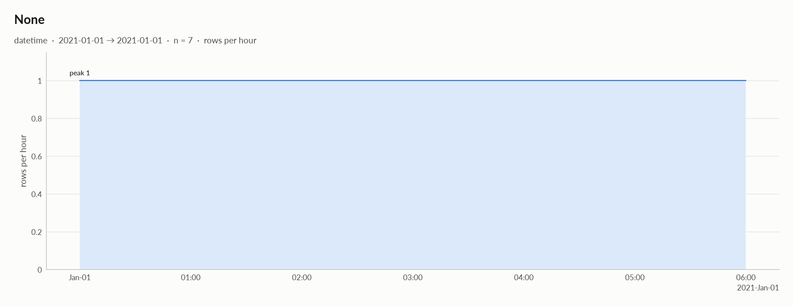
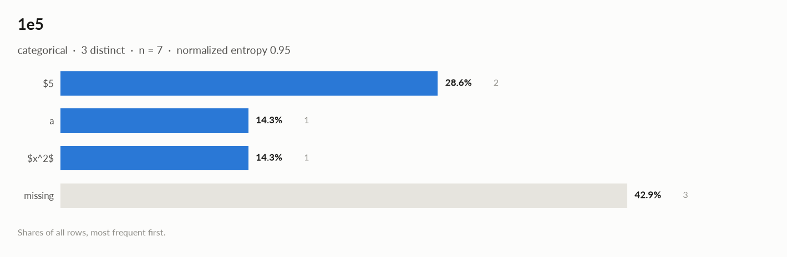

elessar report
7 rows × 8 columns · pandas.DataFrame · read in 0.0s · generated 2026-10-28 11:02 by elessar 0.3.0
Key findings
- 5 features show no significant link with
^_^: True, 1e5, \frac{1}{2}, price ($), ^_^.1 - HIGH
True: possible target leakage: eta = 1.000 with '^_^' - HIGH
price ($): suspicious: 3 negative values in a quantity that should be >= 0 - MEDIUM duplicate or non-string column names were renamed (a, a.1, ...)
- MEDIUM
1e5: 42.9% missing -> drop, or impute and add a missing-indicator - MEDIUM
\frac{1}{2}: 28.6% missing -> drop, or impute and add a missing-indicator - MEDIUM
\frac{1}{2}: redundant with '1e5' (eta +1.000), 'True' (eta +1.000) -> keep only one - MEDIUM
price ($): redundant with 'True' (eta +1.000) -> keep only one
Overall statistics
| Rows | 7 |
| Columns | 8 |
| Memory | 1.7 KB |
| Potential saving | 105 B |
| Pandas dtypes | float64=2, object=2, int64=1, Int64=1, datetime64[us, UTC]=1, interval[int64, right]=1 |
| Semantic types | numeric_discrete=2, numeric_continuous=2, categorical=2, json_like=1, datetime=1 |
| Duplicate rows | 0 (0.0%) |
| Missing cells | 8.9% |
| Target | ^_^ |

Numeric columns at a glance
| column | count | missing | mean | std | min | median | max | skew | kurtosis | outliers | best fit |
|---|---|---|---|---|---|---|---|---|---|---|---|
^_^ | 7 | 0.0% | 27 | 14.59 | -1 | 30 | 41 | -1.3 | 1.61 | 0.0% | - |
^_^.1 | 7 | 0.0% | 2.272e-301 | 0 | -7.400e-301 | 6.093e-302 | 2.017e-300 | - | - | 28.6% | - |
\frac{1}{2} | 5 | 28.6% | 4.8 | 1.924 | 2 | 5 | 7 | -0.59 | -0.0219 | 0.0% | - |
price ($) | 7 | 0.0% | -0.1161 | 1.078 | -1.269 | 0.02745 | 1.831 | 0.873 | 0.597 | 0.0% | - |
Categorical columns at a glance
| column | type | count | missing | distinct | most frequent | share | entropy |
|---|---|---|---|---|---|---|---|
True | categorical | 7 | 0.0% | 7 | (0, 1] | 14.3% | 1 |
1e5 | categorical | 4 | 42.9% | 3 | $5 | 50.0% | 0.946 |
Target analysis
Target: ^_^ (numeric_discrete)

| feature | type | method | association | test | n | p_adj | sig | AUC | MI | flag |
|---|---|---|---|---|---|---|---|---|---|---|
| True | categorical | eta | +1.000 | kruskal-wallis | 7 | 0.54 | 2.807 | LEAKAGE? | ||
| 1e5 | categorical | eta | +0.627 | kruskal-wallis | 4 | 0.54 | 1.500 | |||
| \frac{1}{2} | numeric_discrete | spearman | +0.500 | spearman t-test | 5 | 0.54 | 2.322 | |||
| price ($) | numeric_continuous | spearman | -0.357 | spearman t-test | 7 | 0.54 | 2.807 | |||
| ^_^.1 | numeric_continuous | spearman | +0.071 | spearman t-test | 7 | 0.88 | 2.807 |


Distributions
Normality is tested four ways (Shapiro-Wilk on up to 5,000 values, D'Agostino K², Jarque-Bera, Anderson-Darling); the verdict is 'not normal' when at least half of them reject at alpha 0.05. Every candidate distribution is fitted by maximum likelihood and ranked by AIC; the Akaike weight is its relative support among the candidates.
With thousands of values every test rejects even a good fit, so read KS D (the largest gap between the fitted and the observed cumulative distribution) as the size of the misfit: below 0.03 close, below 0.08 fair, above poor. KS p-values are optimistic since the parameters come from the same data. For integer columns the gap is measured on the integer support and the p-value comes from a chi-square goodness-of-fit test.
| column | n | normality | tests rejecting | best fit | parameters | weight | ΔAIC to 2nd | KS D | KS p | shape |
|---|---|---|---|---|---|---|---|---|---|---|
^_^ | 7 | insufficient data | - | not enough distinct values to fit a distribution | ||||||
^_^.1 | 7 | insufficient data | - | not enough distinct values to fit a distribution | ||||||
\frac{1}{2} | 5 | insufficient data | - | not enough distinct values to fit a distribution | ||||||
price ($) | 7 | insufficient data | - | not enough distinct values to fit a distribution |


Data quality
| severity | column | message |
|---|---|---|
| high | True | possible target leakage: eta = 1.000 with '^_^' |
| high | price ($) | suspicious: 3 negative values in a quantity that should be >= 0 |
| medium | - | duplicate or non-string column names were renamed (a, a.1, ...) |
| medium | 1e5 | 42.9% missing -> drop, or impute and add a missing-indicator |
| medium | \frac{1}{2} | 28.6% missing -> drop, or impute and add a missing-indicator |
| medium | \frac{1}{2} | redundant with '1e5' (eta +1.000), 'True' (eta +1.000) -> keep only one |
| medium | price ($) | redundant with 'True' (eta +1.000) -> keep only one |
| info | - | dtype optimizations save ~105 B: ^_^ -> int8, ^_^.1 -> float32, price ($) -> float32 (see quality['dtype_optimizations'] for code) |
| info | ^_^.1 | 28.6% outliers by the 1.5xIQR rule (outside [-7.341e-301, 8.605e-301]) |

Memory: suggested dtypes save 105 B
| column | current | suggested | saving | code |
|---|---|---|---|---|
^_^ | int64 | int8 | 49 B (88%) | df['^_^'] = pd.to_numeric(df['^_^'], downcast='integer') |
^_^.1 | float64 | float32 | 28 B (50%) | df['^_^.1'] = df['^_^.1'].astype('float32') |
price ($) | float64 | float32 | 28 B (50%) | df['price ($)'] = df['price ($)'].astype('float32') |
Multivariate statistics
Dimensionality reduction
PCA not applicable: needs at least 3 numeric columns and enough rows (2 columns, 7 rows)
Associations between columns
12 pairs tested, 0 significant after Benjamini-Hochberg correction (alpha 0.05).


Strongest associations
| column A | column B | method | value | 95% CI | n | p_adj | sig |
|---|---|---|---|---|---|---|---|
| True | price ($) | eta | +1.000 | 7 | 0.65 | ||
| 1e5 | \frac{1}{2} | eta | +1.000 | 3 | 0.65 | ||
| True | ^_^ | eta | +1.000 | 7 | 0.65 | ||
| True | \frac{1}{2} | eta | +1.000 | 5 | 0.65 | ||
| 1e5 | ^_^ | eta | +0.627 | 4 | 0.65 | ||
| 1e5 | price ($) | eta | +0.566 | 4 | 0.88 | ||
| ^_^.1 | \frac{1}{2} | spearman | -0.500 | [-0.965, +0.726] | 5 | 0.65 | |
| ^_^ | \frac{1}{2} | spearman | +0.500 | [-0.726, +0.965] | 5 | 0.65 |
Multicollinearity (VIF)
| column | VIF |
|---|---|
price ($) | 1.08 |
\frac{1}{2} | 1.08 |

Preparation plan
Cleaning: invalid values 1, missing data 2. Transformation: decomposition 1, rescale 1, normalization 1, encode 2.
Cleaning
| action | column | why | code |
|---|---|---|---|
| Invalid values | price ($) | impossible values: ['3 negative values in a quantity that should be >= 0'] | df.loc[<invalid condition on 'price ($)'>, 'price ($)'] = np.nan |
| Missing data | \frac{1}{2} | 28.6% missing: impute with the mean | df['\\frac{1}{2}'] = df['\\frac{1}{2}'].fillna(df['\\frac{1}{2}'].mean()) |
| Missing data | 1e5 | 42.9% missing: use an explicit 'missing' category | df['1e5'] = df['1e5'].fillna('missing') |
Transformation
| action | column | why | code |
|---|---|---|---|
| Decomposition | None | a date is not a feature: decompose into calendar parts | d = pd.to_datetime(df['None'], errors='coerce')
df['None' + '_year'], df['None' + '_month'] = d.dt.year, d.dt.month
df['None' + '_dow'], df['None' + '_hour'] = d.dt.dayofweek, d.dt.hour |
| Rescale | - | numeric scales differ by x5,016,975,858,419,497,553,459,841,526,237,699,448,729,402,737,465,563,231,208,009,217,343,989,116,077,405,392,051,133,399,113,477,088,467,776,305,757,500,401,939,036,383,893,560,750,331,585,238,434,109,242,630,163,234,554,074,116,552,418,978,118,403,423,202,271,217,872,878,403,675,344,496,501,435,006,969,233,999,670,809,584,649,056,895,694,740,780,072,923,648,871,109,222,683,795,092,259,119,038,464 (\frac{1}{2} vs ^_^.1): distance-based models, regularised models and neural nets need common scales | from sklearn.preprocessing import RobustScaler, StandardScaler
df[[]] = RobustScaler().fit_transform(df[[]]) # outliers
others = ['^_^.1', '\\frac{1}{2}', 'price ($)']
df[others] = StandardScaler().fit_transform(df[others]) |
| Normalization | - | 2 roughly symmetric columns: z-score them (mean 0, sd 1) for linear and distance models | cols = ['\\frac{1}{2}', 'price ($)']
df[cols] = (df[cols] - df[cols].mean()) / df[cols].std() |
| Encode | True | 7 labels: one-hot | df = pd.get_dummies(df, columns=['True'], dummy_na=True) |
| Encode | 1e5 | 3 labels: one-hot | df = pd.get_dummies(df, columns=['1e5'], dummy_na=True) |
Attribute statistics
| column | type | missing | distinct | alerts |
|---|---|---|---|---|
^_^ | numeric_discrete | 0.0% | 7 | 0 |
^_^.1 | numeric_continuous | 0.0% | 7 | 1 |
\frac{1}{2} | numeric_discrete | 28.6% | 5 | 0 |
price ($) | numeric_continuous | 0.0% | 7 | 0 |
_s | json_like | 0.0% | 5 | 0 |
None | datetime | 0.0% | 7 | 0 |
True | categorical | 0.0% | 7 | 0 |
1e5 | categorical | 42.9% | 3 | 0 |
^_^ · numeric_discrete
int64 · int64 dtype: integer values (7 distinct)
| type | numeric_discrete |
| dtype | int64 |
| values | 7 |
| missing | 0 (0.0%) |
| distinct | 7 (100.0%) |
| memory | 56 B |
| mean | 27 |
| 95% CI of mean | [13.5, 40.5] |
| median | 30 |
| 95% CI of median | [-1, 41] |
| trimmed mean | 27 |
| geometric mean | - |
| harmonic mean | - |
| std | 14.59 |
| variance | 213 |
| sem | 5.516 |
| IQR | 15.5 |
| MAD | 8 |
| CV | 0.5405 |
| range | 42 |
| min | -1 |
| p1 | 0.2 |
| p5 | 5 |
| p25 | 22 |
| p50 | 30 |
| p75 | 37.5 |
| p95 | 40.1 |
| p99 | 40.82 |
| max | 41 |
| sum | 189 |
| skewness | -1.3 |
| excess kurtosis | 1.61 |
| KDE modes | - |
| bimodality coef. | 0.385 |
| decimals | 0 |
| IQR fences | [-1.25, 60.75] |
| outside fences | 0 (0.0%) |
| |z| > 3 | 0 (0.0%) |
| modified z > 3.5 | 0 (0.0%) |
| zeros | 0 |
| negatives | 1 |
| infinite | 0 |
| monotonic | no |
^_^.1 · numeric_continuous · 1 alert
float64 · float64 dtype: 7 distinct real values
- INFO 28.6% outliers by the 1.5xIQR rule (outside [-7.341e-301, 8.605e-301])
| type | numeric_continuous |
| dtype | float64 |
| values | 7 |
| missing | 0 (0.0%) |
| distinct | 7 (100.0%) |
| memory | 56 B |
| mean | 2.272e-301 |
| 95% CI of mean | [2.272e-301, 2.272e-301] |
| median | 6.093e-302 |
| 95% CI of median | [-7.400e-301, 2.017e-300] |
| trimmed mean | 2.272e-301 |
| geometric mean | - |
| harmonic mean | - |
| std | 0 |
| variance | 0 |
| sem | 0 |
| IQR | 3.986e-301 |
| MAD | 2.623e-301 |
| CV | 0 |
| range | 2.757e-300 |
| min | -7.400e-301 |
| p1 | -7.077e-301 |
| p5 | -5.784e-301 |
| p25 | -1.361e-301 |
| p50 | 6.093e-302 |
| p75 | 2.625e-301 |
| p95 | 1.545e-300 |
| p99 | 1.922e-300 |
| max | 2.017e-300 |
| sum | 1.591e-300 |
| skewness | - |
| excess kurtosis | - |
| KDE modes | - |
| bimodality coef. | - |
| decimals | 0 |
| IQR fences | [-7.341e-301, 8.605e-301] |
| outside fences | 2 (28.6%) |
| |z| > 3 | 0 (0.0%) |
| modified z > 3.5 | 1 (14.3%) |
| zeros | 0 |
| negatives | 3 |
| infinite | 0 |
| monotonic | no |
\frac{1}{2} · numeric_discrete
Int64 · Int64 dtype: integer values (5 distinct)
| type | numeric_discrete |
| dtype | Int64 |
| values | 5 |
| missing | 2 (28.6%) |
| distinct | 5 (100.0%) |
| memory | 63 B |
| mean | 4.8 |
| 95% CI of mean | [2.412, 7.188] |
| median | 5 |
| 95% CI of median | - |
| trimmed mean | 4.8 |
| geometric mean | 4.416 |
| harmonic mean | 3.97 |
| std | 1.924 |
| variance | 3.7 |
| sem | 0.8602 |
| IQR | 2 |
| MAD | 1 |
| CV | 0.4007 |
| range | 5 |
| min | 2 |
| p1 | 2.08 |
| p5 | 2.4 |
| p25 | 4 |
| p50 | 5 |
| p75 | 6 |
| p95 | 6.8 |
| p99 | 6.96 |
| max | 7 |
| sum | 24 |
| skewness | -0.59 |
| excess kurtosis | -0.0219 |
| KDE modes | - |
| bimodality coef. | 0.169 |
| decimals | 0 |
| IQR fences | [1, 9] |
| outside fences | 0 (0.0%) |
| |z| > 3 | 0 (0.0%) |
| modified z > 3.5 | 0 (0.0%) |
| zeros | 0 |
| negatives | 0 |
| infinite | 0 |
| monotonic | no |
price ($) · numeric_continuous
float64 · float64 dtype: 7 distinct real values
| type | numeric_continuous |
| dtype | float64 |
| values | 7 |
| missing | 0 (0.0%) |
| distinct | 7 (100.0%) |
| memory | 56 B |
| mean | -0.1161 |
| 95% CI of mean | [-1.113, 0.8804] |
| median | 0.02745 |
| 95% CI of median | [-1.269, 1.831] |
| trimmed mean | -0.1161 |
| geometric mean | - |
| harmonic mean | - |
| std | 1.078 |
| variance | 1.161 |
| sem | 0.4073 |
| IQR | 1.265 |
| MAD | 0.9932 |
| CV | 9.28 |
| range | 3.1 |
| min | -1.269 |
| p1 | -1.253 |
| p5 | -1.188 |
| p25 | -0.983 |
| p50 | 0.02745 |
| p75 | 0.2819 |
| p95 | 1.382 |
| p99 | 1.741 |
| max | 1.831 |
| sum | -0.8128 |
| skewness | 0.873 |
| excess kurtosis | 0.597 |
| KDE modes | - |
| bimodality coef. | 0.294 |
| IQR fences | [-2.88, 2.179] |
| outside fences | 0 (0.0%) |
| |z| > 3 | 0 (0.0%) |
| modified z > 3.5 | 0 (0.0%) |
| zeros | 0 |
| negatives | 3 |
| infinite | 0 |
| monotonic | no |
_s · json_like
object · cells contain Python dict/list objects
| type | json_like |
| dtype | object |
| values | 7 |
| missing | 0 (0.0%) |
| distinct | 5 (71.4%) |
| memory | 1008 B |
| mode | [1, 2] ×3 |
Most frequent values
| value | count | share |
|---|---|---|
[1, 2] | 3 | 42.9% |
{'k': 0} | 1 | 14.3% |
{'k': 2} | 1 | 14.3% |
{'k': 4} | 1 | 14.3% |
{'k': 6} | 1 | 14.3% |
- Python types: dict 4, list 3
- Top keys: k (4)
None · datetime
datetime64[us, UTC] · datetime dtype
| type | datetime |
| dtype | datetime64[us, UTC] |
| values | 7 |
| missing | 0 (0.0%) |
| distinct | 7 (100.0%) |
| memory | 56 B |
| first | 2021-01-01 |
| last | 2021-01-01 06:00:00 |
| span | 0 days 06:00:00 |
| frequency | h |
| duplicated timestamps | 0 |
| in the future | 0 |
| before 1900 | 0 |
| largest gap | 0 days 01:00:00 (2021-01-01 → 2021-01-01 01:00:00) |
- Rows by hour: 0 1, 1 1, 2 1, 3 1, 4 1, 5 1, 6 1

True · categorical
interval[int64, right] · unrecognised dtype interval[int64, right], treated as labels
| type | categorical |
| dtype | interval[int64, right] |
| values | 7 |
| missing | 0 (0.0%) |
| distinct | 7 (100.0%) |
| memory | 112 B |
| cardinality | 7 |
| entropy | 2.81 bits (1.00 of max) |
| Gini impurity | 0.857 |
| imbalance | ×1 |
| rare labels | 0 (0.0% of rows) |
| uniform? chi² | p 1 |
1e5 · categorical
object · 3 distinct labels
| type | categorical |
| dtype | object |
| values | 4 |
| missing | 3 (42.9%) |
| distinct | 3 (75.0%) |
| memory | 278 B |
| mode | $5 ×2 |
| cardinality | 3 |
| entropy | 1.50 bits (0.95 of max) |
| Gini impurity | 0.625 |
| imbalance | ×2 |
| rare labels | 0 (0.0% of rows) |
| uniform? chi² | p 0.78 |
Most frequent values
| value | count | share |
|---|---|---|
$5 | 2 | 50.0% |
a | 1 | 25.0% |
$x^2$ | 1 | 25.0% |

Run
| Source | pandas.DataFrame · read in 0.0s |
| Processes | 3 for the analysis, 3 for the charts (14 cores available) |
| Time | 2.2s (load 0.0s, columns 0.2s, associations 0.2s, quality 0.0s, charts 1.7s) |
| Significance | alpha 0.05, Benjamini-Hochberg false discovery rate per family of tests |
| Versions | elessar 0.3.0 · Python 3.12.14 · pandas 3.1.0 · numpy 2.5.4 · scipy 1.18.1 |